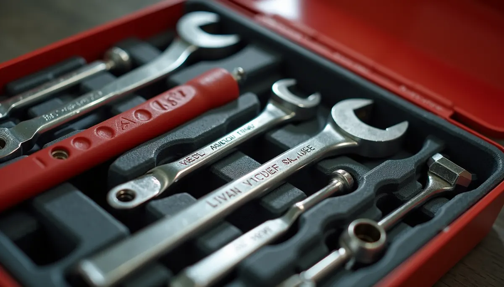
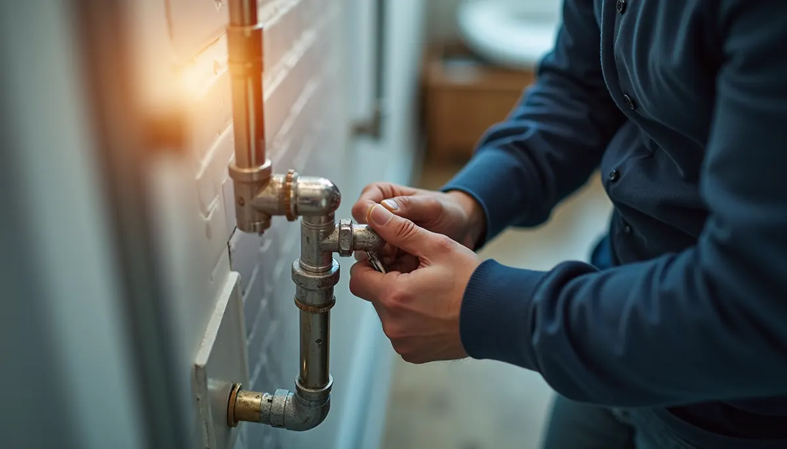

We all enjoy a strong shower and a hose that sprays effectively, but what if the high water pressure is actually causing harm to your plumbing? This seemingly minor inconvenience can lead to serious issues and costly repairs. Understanding the dangers of excessive water pressure, how it affects your home, and the solutions offered by Angle Stop Plumbing in Murfreesboro can be beneficial for any homeowner.
The Hidden Dangers of High Water Pressure
Think of your plumbing as a sensitive network. Just as elevated blood pressure strains the body, high water pressure puts a lot of stress on your plumbing system. This stress doesn’t just vanish; over time, it leads to various problems:
Leaky Faucets and Fixtures
High water pressure can compromise the seals, washers, and O-rings in faucets, showerheads, and toilets. This often results in leaks.
For example, a small leak can let out about 10 gallons of water a week, leading to waste and potentially causing mold growth or water damage to surrounding areas, resulting in repair costs that can exceed $1,000.
Burst Pipes
During extreme temperature changes, high pressure increases the risk of pipes cracking or bursting. This can create a significant emergency, turning your living room into a flooded mess.
According to statistics, a burst pipe can result in damages averaging around $5,000 to $10,000, depending on the extent of the flooding.
Shortened Appliance Lifespan
Water-using appliances like dishwashers and washing machines must operate within a certain pressure range. High pressure burdens their components, leading to premature failure.
For instance, a washing machine facing elevated pressure might last only half its expected lifespan, costing you more in replacements than if you'd managed the pressure properly.
Noisy Pipes (Water Hammer)
The annoying bang you hear when quickly turning off a tap is often due to water pressure being too high. This "water hammer" creates shockwaves in the pipes, loosening joints and potentially causing long-term damage.
Besides being a nuisance, this can degrade your plumbing over time, leading to more significant repairs later.
Increased Water Bills
High water pressure can drive up your monthly utility bills. For example, if your home uses water at an average cost of $0.004 per gallon, just a slight increase in pressure can raise your bill by as much as 25%. This extra cost adds up quickly.
Who's Responsible for High Water Pressure?
Determining who is accountable for high water pressure can be confusing. Most homeowners are responsible for their plumbing from the point it enters their property. However, if the high pressure is a result of the municipal supply, the utility company may be liable.
If you suspect your water pressure is too high, act quickly. Use a pressure gauge to check it; the normal range is between 40-70 psi. If yours is above this range, it’s essential to take steps to address the issue.
The Angle Stop Plumbing Solution
If you find that your home’s water pressure is excessive, don't panic—there are effective solutions available.
Pressure Regulators
Installing a pressure regulator is one of the best ways to combat high water pressure. This device ensures that water enters your home at a consistent and safe pressure, helping to prevent damage.
Regular Inspections
Engaging professionals like Angle Stop Plumbing for regular inspections can catch any high-pressure issues before they escalate. Early detection can save you money and stress in the long run.
Education and Awareness
Angle Stop Plumbing provides valuable guidance on managing your plumbing system. Understanding how to monitor your water pressure empowers you to take control.
For instance, turning off faucets slowly and checking for leaks regularly can greatly reduce stress on your plumbing system.

Protecting Your Home from Hidden Dangers
High water pressure poses a threat to your home that could lead to thousands in repairs. By recognizing the signs early and taking preventive measures, you can avoid severe damage and unnecessary expenses.
Angle Stop Plumbing in Murfreesboro is here to help you understand and manage your plumbing. They offer solutions tailored to your needs, from installing pressure regulators to conducting regular inspections and providing essential education on plumbing care.
Don't let high water pressure become an unseen enemy. Protect your investment today. With Angle Stop Plumbing, you can feel secure knowing your plumbing is in capable hands.
Being aware of the hidden costs linked to high water pressure and consulting with professionals can safeguard your home and enhance the lifespan of your plumbing system.

Invest in your home today and let Angle Stop Plumbing be your trusted partner in maintaining a safe and efficient plumbing system.